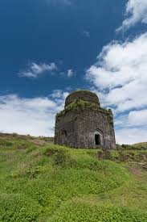

Lohaghad Fort

- Among the many hill forts
in Maharashtra, Lohagadh is a marvelous piece of architecture. Located 52 km
northwest of Pune, the fort sits at an elevation
of 1,033 m above sea level.
- In 1648 CE, the fort was captured by Shivaji, which
was then captured by the Mughals in 1665 CE. In 1670 CE, Shivaji Maharaj
captured the fort again and he used it to store his treasury looted from Surat.
- Lohagadh fort
is also one of the scenic treks in Pune that can be done in a day.
Location: Pune
District, Maharashtra,
India Entry Fees: N/A
Famous For: Sightseeing, Trekking.
- Photography A military marvel built in the 16th century, Lohagad Fort was ruled by
the Maratha Empire throughout (apart from a short span of 5 years when it fell into
the hands of the Mughal Empire).
- Standing 1,033 metres tall above sea level,
Lohagad Fort is one of the best forts in Maharashtra for trekking. It is inter�connected
to Visapur Fort by a small range.
- So, if you like a good challenge, you could visit
two forts in one day. During the monsoon season, the trail to the fort is even more
beautiful.
- If you take a small detour, you can explore the majestic Bhaja Caves,
especially if spelunking is your thing.
- Another option is to scale this mountain in a
motor vehicle, as there is a well-paved tar road that goes all the way up to the fort.
Once you reach the top, you can enjoy the stunning views of Parvana Reservoir.
- Entry Time: 9 AM to 6 PM
Entry Fee: Free
Nearest Airport: Mumbai‟s Chhatrapati
Shivaji Maharaj Airport and Pune International Airport
Nearest Railway Station:
Malavi Railway Station
How to reach: Lonavala is well connected by railways and
roadways to both Mumbai and Pune.
Once in Lonavala, you can opt for a local train to reach
39 Malavli Railway Station and then take a shared cab or auto to the fort, which is just
5 km away.
You can also book a private cab or use a public bus from Lonavala
to reach Malavli Station.